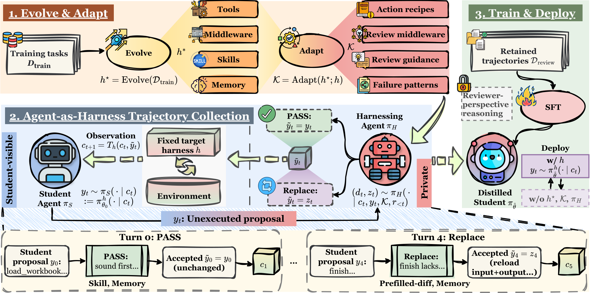

核心判断：Harness-Zero 不把专用 harness 的完整轨迹直接复制给学生，而是在每一步动作执行前加入临时 harnessing agent：它检查学生响应，选择 PASS 或生成可在目标 harness 中执行的 REPLACE 响应。审查后的轨迹再用于 SFT，部署时移除专用 harness 和审查 agent。
问题与动机
专用 harness 往往拥有目标环境没有的工具、memory 和 middleware，直接收集的轨迹不能在部署条件下复现。
方法框架
- 先演化出学生侧 harness，再把它适配成 reference harness，改变工具受众和执行位置。
- 学生先提出动作，harnessing agent 只在执行前审查；REPLACE 必须给出仍符合目标 harness 的完整响应。
- 用隐私过滤和 reviewed trajectories 做 SFT，并分析行为级内化。
实验与核心结论
- 论文在 SpreadsheetBench、AppWorld 和 USPTO Retrosynthesis 上比较 Agent-as-Harness 与 Code-as-Harness，并报告移除专用 harness 后的能力保留。
- 审查协议的关键不是让教练替学生执行，而是把外部流程翻译成目标 harness 可执行的动作。
- 代码仓库已公开，但效果仍依赖 reference harness 的适配质量和 review 预算。
Harness-Zero 总体框架

价值与边界
Harness-Zero 将‘工具增强’转成可蒸馏的局部决策监督，适合研究 harness 行为内化；PASS/REPLACE 的审查成本和错误替换需要单独计量。